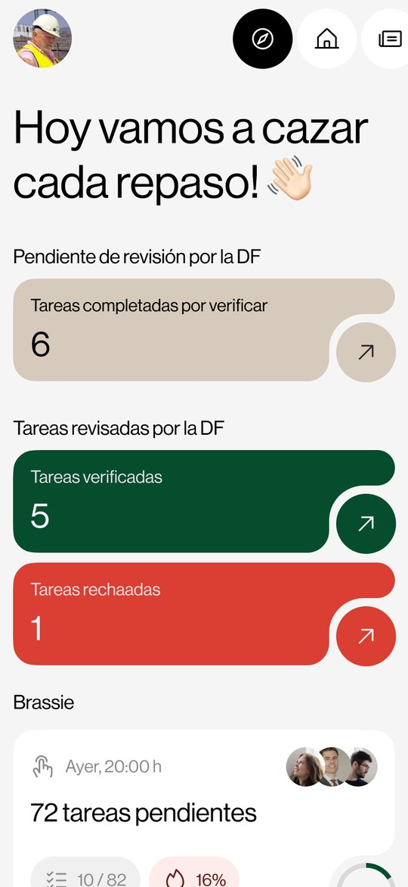
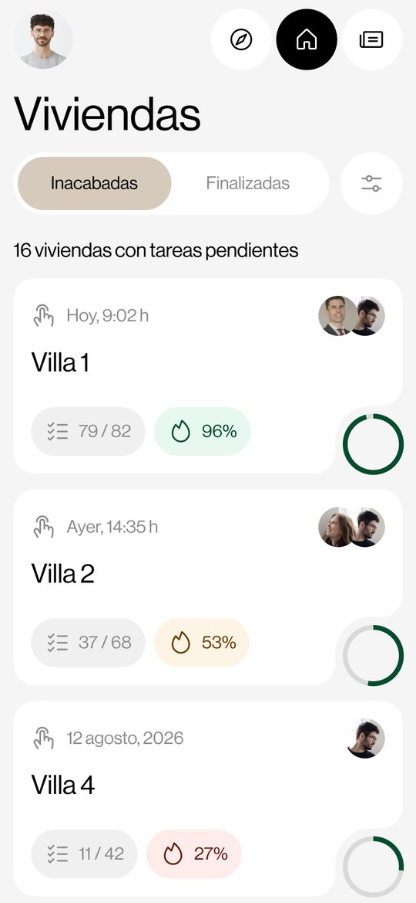
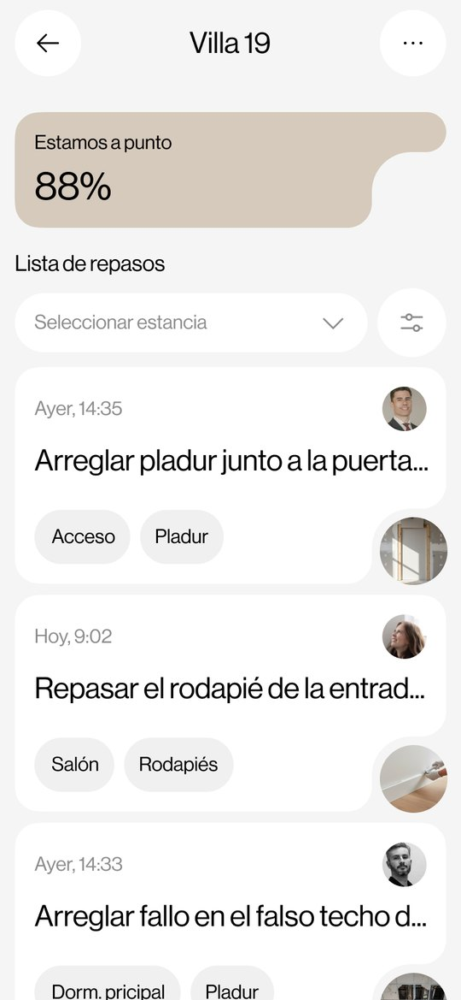
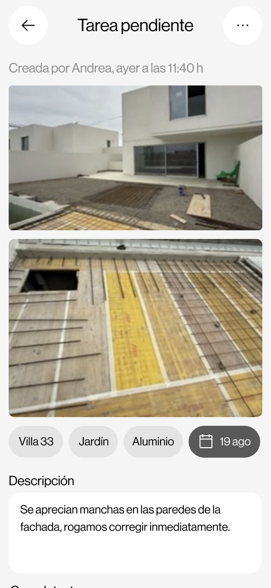
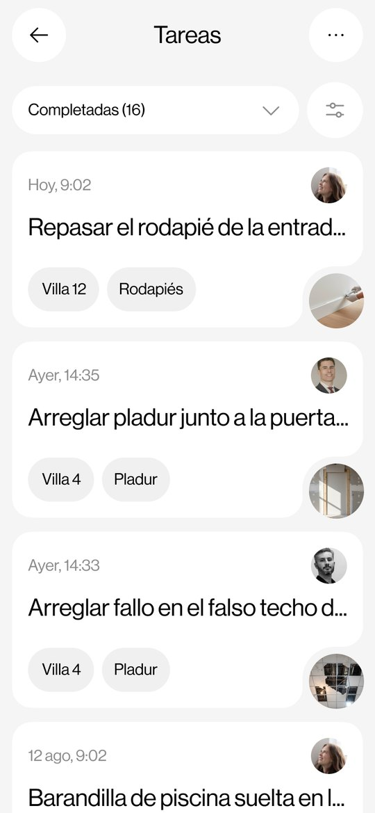

Los repasos de la obra, sin una sola hoja de papel
Gestiona, documenta y verifica los repasos de obra de las promociones desarrolladas por UNIK, conectando a técnicos, constructora y propiedad.
Pensada para usarse andando por la vivienda, con una mano y sin quitarse el casco.
De la incidencia a la verificación
UNIK Works reúne en un mismo entorno a propiedad, dirección facultativa, constructora y profesionales de cada proyecto, y permite registrar, organizar, documentar y verificar las tareas de revisión de una promoción de forma sencilla y estructurada.

El día, de un vistazo
Al abrir la aplicación, cada persona ve lo suyo: lo que está pendiente de revisión, lo que se ha dado por bueno y lo que ha vuelto rechazado. La información y las funciones se adaptan al perfil de cada usuario.

El avance de cada vivienda
Todas las casas de la promoción, con su grado de avance y su anillo de color: rojo mientras queda mucho, ámbar cuando va avanzando, verde cuando está a punto. Se filtra por oficio, por estado y por lo que haga falta.

Lo que queda en esta casa
Dentro de una vivienda, los repasos pendientes con su foto, su estancia y su oficio. Lo verificado baja al final, tachado: ya está hecho y no tiene que quitarle sitio a lo que falta.

Cada remate, con su foto
Una tarea se apunta delante del defecto y con una foto hecha en ese momento. Sin foto no hay tarea, porque una frase suelta no la puede comprobar quien llegue después, y quien la escribió ya no está delante.

Cada mano en su sitio
La constructora da los remates por completados. La dirección facultativa los revisa antes de su validación definitiva: los verifica, o los rechaza explicando qué sigue mal. Nunca la misma persona las dos cosas, y por eso el porcentaje de avance significa algo.
Qué se puede hacer
- Crear inspecciones y registrar nuevos repasos directamente desde obra.
- Asociar cada tarea a una vivienda, estancia, oficio o subcontrata.
- Incorporar fotografías para documentar cada incidencia.
- Consultar las tareas pendientes, completadas, verificadas o rechazadas.
- Filtrar las incidencias por vivienda, oficio, estado y otros criterios del proyecto.
- Realizar el seguimiento del grado de avance de cada vivienda.
- Revisar los trabajos comunicados como terminados antes de su validación definitiva.
- Mantener un historial de comentarios y comunicaciones de cada vivienda.
- Identificar rápidamente las tareas que requieren intervención o revisión.
- Generar documentación e informes de seguimiento de las inspecciones realizadas.
En obra no siempre hay cobertura
En un sótano, en un garaje o en una planta sin señal, la aplicación sigue funcionando. Las tareas y las fotografías se guardan en el móvil y se suben solas en cuanto vuelve la conexión. Nadie tiene que acordarse de nada.
Un proceso ordenado, visual y trazable
UNIK Works centraliza el proceso de repasos para conseguir un seguimiento más ordenado, visual y trazable desde la detección de una incidencia hasta su resolución y verificación final.
Acceso restringido. UNIK Works es una herramienta de uso profesional. El acceso está limitado a usuarios autorizados vinculados a promociones gestionadas por UNIK Desarrollos Inmobiliarios, S.L. o a proyectos en los que la compañía participe. No hay registro abierto: las cuentas las facilita la promotora.